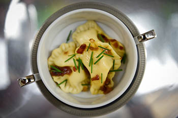

Menu
Home
Quem Somos
Menu
Galeria
Encomendas
Imprensa
Contato
HOSH HASHANÁ

MESA COM SALGADOS E DOCES
Cremoso Brownie com casquinha crocante de chocolate Belga
Delicado Strudel de maçã verde
Leikach - Bolo de mel de laranjeiras
Blintzs de amora – Pequenos envelopes de crepe com recheio de compota de amora da fazenda
Cheesecake NYC com framboesa
Choco D´oro – Torta morna de chocolate sem farinha
Bolos : Amêndoas, Laranja, Brigadeiro e Erva doce
Torta de farinha de amêndoas com peras Smith caramelada e creme patisier com favas de baunilha Bourbon
Torta Toffee puxa com Nougat de nuts
PEQUENO SANDUICHE DE:
Suave creme de ricota artesanal
Caprese com mozarela fresca de búfala e pesto rustico piemontês
Salmão defumado, cream cheese e avocado
Saboroso queijo Boursin com raspinhas de limão-siciliano ao perfume de tomilho, tomate momotaro confit e tapenade de azeitona Taggiasca
Pumpernickel com Hering com maçã verde e sour cream
Salmão marinado com Dill orgânico e pimenta rosa acompanha duo de torradinha crocante de pão miga e sour cream
Minigefilte fish com receita tradicional de família acompanha Chrein
Consome com Borsh com sour cream
PASSADOS
Varenikes de batata com Crips de cebola
Bureka de queijo búlgaro
Brunch
Chá da Tarde
Jantar
Hosh Hashaná
Almoço
Batizado
Chá de Bêbê
Happy Hour
Jantar Americano
Kids
Páscoa
Pessach
Telefones da Banqueting: 11 96323-8357
Copyright © 2012 Banqueting. All Rights Reserved.